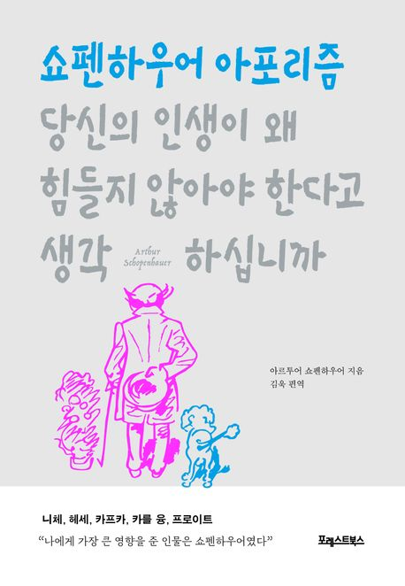
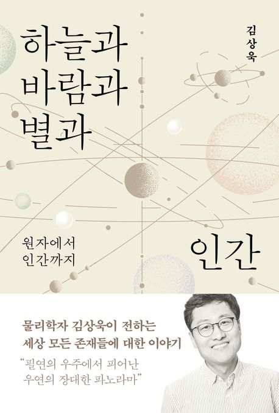

자세히 보기

제목 : 당신의 인생이 왜 힘들지 않아야
한다고 생각하십니까
줄거리 : 쇼펜하우어의 삶에 대한 통찰과 정곡을 찌르는 인생 조언을 모아 엮은 책이다. 쇼펜하우어를 알고 있는 사람도, 알지 못했던 사람도 이 책을 읽게 되는 순간, 옛 철학자의 독설 안에 감춰진 열망과 투지를 느낄 수 있을 것이다.
줄거리 : 쇼펜하우어의 삶에 대한 통찰과 정곡을 찌르는 인생 조언을 모아 엮은 책이다. 쇼펜하우어를 알고 있는 사람도, 알지 못했던 사람도 이 책을 읽게 되는 순간, 옛 철학자의 독설 안에 감춰진 열망과 투지를 느낄 수 있을 것이다.
자세히 보기

제목 : 세이노의 가르침
줄거리 : 이 책은 부자 되는 법을 가르치는 책이 아니다. 이 책의 저자는 돈이 삶의 우열을 결정하지 않는다고 설파한다. 대신, 삶을 어떻게 살아갈지에 대한 고민을 나눈다. 스스로의 인생을 위해 삶의 자세부터 바로잡고, ‘피보다 진하게 살라’ 한다.
줄거리 : 이 책은 부자 되는 법을 가르치는 책이 아니다. 이 책의 저자는 돈이 삶의 우열을 결정하지 않는다고 설파한다. 대신, 삶을 어떻게 살아갈지에 대한 고민을 나눈다. 스스로의 인생을 위해 삶의 자세부터 바로잡고, ‘피보다 진하게 살라’ 한다.
자세히 보기

제목 : 하늘과 바람과 별과 인간
줄거리 : 〈알쓸인잡〉의 다정한 물리학자 김상욱이 5년 만에 신간 윤동주 시인의 시집에서 영감을 받은 이 책의 제목 ‘하늘과 바람과 별과 인간’은 존재하는 모든 것을 이해하고 싶었던 저자의 마음을 담고 있
줄거리 : 〈알쓸인잡〉의 다정한 물리학자 김상욱이 5년 만에 신간 윤동주 시인의 시집에서 영감을 받은 이 책의 제목 ‘하늘과 바람과 별과 인간’은 존재하는 모든 것을 이해하고 싶었던 저자의 마음을 담고 있